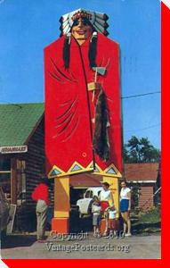

LARGE CANADIAN ROADSIDE ATTRACTIONS

Chief Standing Moose
North Bay, Ontario
Credit:
Cathy of
nipissinghistory.com
and
vintagepostcards.org
Return to Archive Page
Main
|
What's New
|
By Location
|
Alphabetical Listing
|
By Type
Wanted Photos List
|
Links
Copyright © 2010 Ed Solonyka